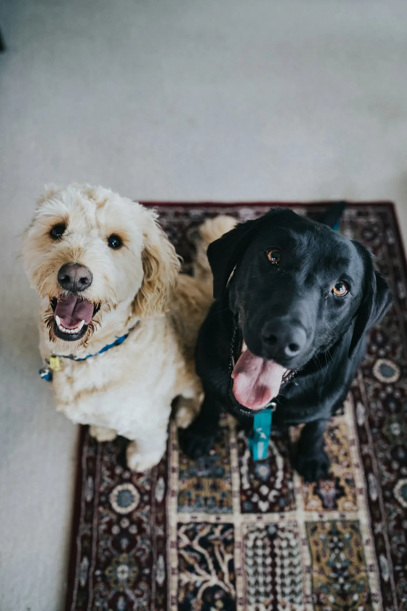

Needs a foster
Needs a foster
Home / Foster
Fostering
Foster a dog. Save a life. Free up a kennel.
We are a primarily foster-based rescue. Without committed fosters, we can't take dogs into our program. It takes a village!

A true partnership
We cover the vet bills. You cover the love.
Big Love Rescue provides
- All medical care and vet bills
- Vaccines, preventatives and treatment
- Support from experienced rescue volunteers
- Adoption screening, so you know your foster goes to a great home
Our fosters provide
- An indoor home environment
- Food, love and basic daily care
- Transport to adoption events and vet visits when needed
- An approved foster application on file
Please make sure your own pets are up to date on vaccines for their protection.
Fosters needed now
See details on Petfinder
These dogs need a soft place to land
Autumn, Theo and Dakota are all in need of a foster. Could you open your home for a few weeks?
Needs a foster
Also waiting for a foster home.
Photos and bios for every foster-needed dog will show here automatically once we connect the Petfinder feed.
Apply to foster
Your foster journey
From application to "gotcha day"
Apply
Complete the foster application. It takes about 10 minutes.
Get matched
We pair you with a dog that suits your home, schedule and pets.
Foster
Love, feed and observe. Your notes help us write honest bios.
Celebrate
Your foster finds a forever home, and you've saved a life.
Questions
Foster FAQ
Does fostering cost me anything?
We cover all medical care. Fosters provide an indoor home, food, love and basic care. Ask us if you need help with supplies.
How long does a foster stay?
It depends on the dog. Some get adopted in a few weeks, others take longer. We'll always be upfront with you.
Can I foster if I have my own pets?
Usually, yes. Your pets must be current on vaccines, and we'll match you with a dog who gets along with them.
What if I fall in love?
It happens! Fosters can apply to adopt their foster dog through our normal adoption process.
We're a 100% volunteer-run program. Please keep that in mind when you reach out ♥
Ready when you are
Open your heart, and maybe your couch.
Adopt, foster, or give. Every path ends with a dog who finally feels safe.